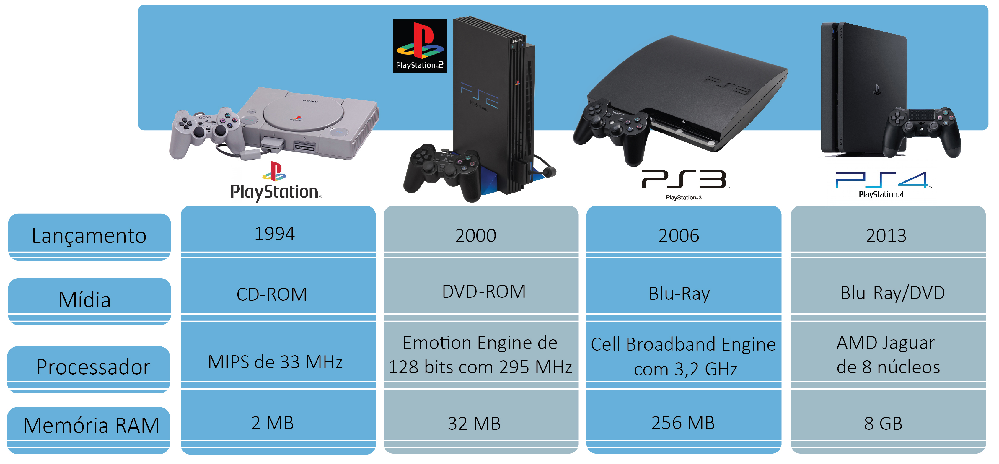

Um dos eletronicos mais populares no mundo são os vídeo-games, que atraem pessoas das mais diversas idades e dos mais distintos segmentos, dessa maneira, é comum as empresas que fabricam o produto atualizarem os consoles. Hoje através do vídeo game pode-se entrar na internet e se conectar a milhares de pessoas que estão presentes na rede mundial de computadores. Em um mundo no qual a tecnologia evolui a cada segundo, não é difícil de imaginar que o que hoje consideramos altamente moderno, logo será considerado obsoleto. Alguns especialistas acreditam que estejamos vivendo a última geração dos consoles, visto que, com o armazenamento em nuvem, a distribuição dos games deverá ser feita pela internet, por meio de streaming .
Linha do tempo dos consoles
Com mais de 20 anos de historia a franquia PlayStation revolucionou o mundo dos videosgames. A evolução da capacidade de processamento ocorreu exponencialmente, de apenas 2 MB de memória na primeira versão para incríveis 8 GB no PlayStation 4, sendo a memória 32 vezes
maior do que no PS3. Confira um pequeno infográfico com a evolução do console
INFOGRÁFICOS
PLAYSTATION

O primeiro console produzido de forma direta pela Microsoft utilizava como mídia um leitor de CD e DVD, além de trazer uma CPU baseada no Pentium III. Já seu sucessor chegou às lojas oferecendo suporte para HD DVD, com memória RAM de 512 MB DDR3 e com suporte para capacidade de armazenamento variável.
A mudança gráfica entre as gerações é visível, e sera vista no proximo topico . Enquanto o primeiro Xbox já trazia gráficos considerados surpreendentes para o início do século XXI, o Xbox 360 alcançou seu auge na metade de sua história. Para demonstrar todo seu poder de processamento e conquistar inúmeros jogadores.